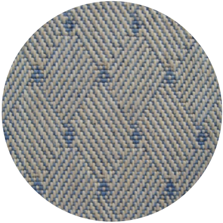
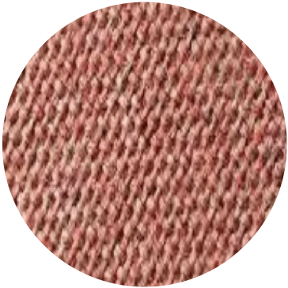

<!DOCTYPE html>
<html>

<head>
  <title>My experiment</title>
  <script src="jspsych/jspsych.js"></script>
  <script src="jspsych/plugin-video-keyboard-response.js"></script>
  <script src="jspsych/plugin-image-keyboard-response.js"></script>
  <script src="jspsych/plugin-image-button-response.js"></script>
  <script src="jspsych/plugin-html-keyboard-response.js"></script>

  <link rel="stylesheet" href = "experiment.css">

</head>

<body></body>
<script>
  //stimuli = [["stimuli/trial1.mp4", "stimuli/image1.png"]]
  //order = shuffle(stimuli)

  // for (trial=0; trial<stimuli.length; trials++)
              // {
                // vid = order[trial][0]
                // img = order[trial][1]

              

const jsPsych = initJsPsych({override_safe_mode: true});
//  StartingSepts: DEFINE TIMELINE
var timeline = [];

var welcome = [
      {type: jsPsychVideoKeyboardResponse,
      stimulus: ["stimuli/Move 1 - Welcome to the Greenhouse.mp4"]},
      { type: jsPsychVideoKeyboardResponse,
      stimulus: ["stimuli/Movie 3 -- the flowers bloom because of special lights.mp4"]},
      {type: jsPsychVideoKeyboardResponse,
      stimulus: ["stimuli/Movie 4 Now you will see two sets of lights.mp4"]},
      {type: jsPsychVideoKeyboardResponse,
      stimulus: ["stimuli/Movie 5 There are also two sets of flowers.mp4"]},
      {type: jsPsychVideoKeyboardResponse,
      stimulus: ["stimuli/greatjob2!.mp4"]}]
      timeline = timeline.concat(welcome);

 var inclusiontrial = [
     {type: jsPsychVideoKeyboardResponse,
      stimulus: ["stimuli/Movie 7 Inclusion question (picture plus audio).mp4"]},
     {type: jsPsychImageButtonResponse,
      choices: ["1", "2"],
      button_html: ["</img>", "</img>"],
      stimulus: ["stimuli/Still 7 Inclusion Trial.png"]},
     {type: jsPsychVideoKeyboardResponse,
      stimulus: ["stimuli/Movie 8 Great job.mp4"]}];
 timeline = timeline.concat(inclusiontrial)

// STEP 1: DEFINE ALL UNIQUE STIMULI
var stim1A = {
    type: jsPsychVideoKeyboardResponse,
    stimulus: ["stimuli/Movie 9 LINEAR vs. parabolic set up.mp4"]
};
var stim1B = {
    type: jsPsychVideoKeyboardResponse,
    stimulus: ["stimuli/Movie 10 LINEAR vs. Parabolic prompt.mp4"]
};
var stim1C = {
     type: jsPsychImageButtonResponse,
     stimulus: ["stimuli/Movie 11 LINEAR vs. parabolic test (audio and still).mp4"],
     choices: ["1", "2"],
     button_html: ["</img>", "</img>"]
 };
 var stim1D = {
    type: jsPsychVideoKeyboardResponse,
    stimulus: ["stimuli/Movie 8 Great job.mp4"]
};


var stim2A = 
{
      type: jsPsychVideoKeyboardResponse,
      stimulus: ["stimuli/Movie 12 linear vs. PARABOLIC setup.mp4"]
};
  var stim2B =
{
      type: jsPsychVideoKeyboardResponse,
      stimulus: ["stimuli/Movie 13 Linear vs. PARABOLIC prompt.mp4"]
};
  var stim2C =  
{
      type: jsPsychImageButtonResponse,
      stimulus: ["stimuli/Movie 14 Linear vs. PARABOLIC test (audio and still).mp4"],
      choices: ["1", "2"],
     button_html: ["</img>", "</img>"]
};


  var stim3A = 
{
      type: jsPsychVideoKeyboardResponse,
      stimulus: ["stimuli/Movie 15 LINEAR vs. sinusoidal setup.mp4"]
};
  var stim3B =
{   type: jsPsychVideoKeyboardResponse,
       stimulus: ["stimuli/Movie 16 LINEAR vs. sinusoidal prompt.mp4"]
}; 
     var stim3C =
{
      type: jsPsychImageButtonResponse,
     stimulus: ["stimuli/Movie 17 LINEAR vs. sinusoidal test (audio and still).mp4"],
       choices: ["1", "2"],
     button_html: ["</img>", "</img>"],
};


     var stim4A = 
{
      type: jsPsychVideoKeyboardResponse,
       stimulus: ["stimuli/Movie 18 Linear vs. SINUSOIDAL setup.mp4"]
};
      var stim4B =
{
      type: jsPsychVideoKeyboardResponse,
      stimulus: ["stimuli/Movie 19 linear vs. SINUSOIDAL prompt.mp4"]
}; 
    var stim4C =
{
      type: jsPsychImageButtonResponse,
     stimulus: ["stimuli/Movie 20 linear vs. SINUSOIDAL test (still and movie).mp4"],
      choices: ["1", "2"],
      button_html: ["</img>", "</img>"],
};

    

    var stim5A = 
{
      type: jsPsychVideoKeyboardResponse,
       stimulus: ["stimuli/Movie 21 PARABOLIC vs. sinusoidal setup.mp4"]
};
    var stim5B =
{
      type: jsPsychVideoKeyboardResponse,
      stimulus: ["stimuli/Movie 22 PARABOLIC vs. sinusoidal prompt.mp4"]
};
    var stim5C =
{
    type: jsPsychImageButtonResponse,
       stimulus: ["stimuli/Movie 23 PARABOLIC vs. sinusoidal test (still and movie).mp4"],
       choices: ["1", "2"],
      button_html: ["</img>", "</img>"],
};


    var stim6A = 
{
      type: jsPsychVideoKeyboardResponse,
       stimulus: ["stimuli/Movie 24 parabolic vs. SINUSOIDAL setup.mp4"]
};
    var stim6B =
{
      type: jsPsychVideoKeyboardResponse,
      stimulus: ["stimuli/Movie 25 parabolic vs. SINUSOIDAL prompt.mp4"]
};
    var stim6C =
{
    type: jsPsychImageButtonResponse,
       stimulus: ["stimuli/Movie 26 parabolic vs. SINUSOIDAL test (still and audio).mp4"],
       choices: ["1", "2"],
      button_html: ["</img>", "</img>"],
};
  

    // STEP 2: put stimuli into trials
    var trial1 = []
    trial1.push(stim1A)
    trial1.push(stim1B)
    trial1.push(stim1C) // audio seems to not exist for this video...
    trial1.push(stim1D) // THIS IS 'GREAT JOB' :) (need Laura to do one small recording)

    var trial2 = []
    trial2.push(stim2A)
    trial2.push(stim2B)
    trial2.push(stim2C)
    trial2.push(stim1D) 

    var trial3 = []
    trial3.push(stim3A)
    trial3.push(stim3B)
    trial3.push(stim3C)
    trial3.push(stim1D) 

    var trial4 = []
    trial4.push(stim4A)
    trial4.push(stim4B)
    trial4.push(stim4C)
    trial4.push(stim1D) 

    var trial5 = []
    trial5.push(stim5A)
    trial5.push(stim5B)
    trial5.push(stim5C)
    trial5.push(stim1D) 

    var trial6 = []
    trial6.push(stim6A)
    trial6.push(stim6B)
    trial6.push(stim6C)
    trial6.push(stim1D) 


    // Put trials into a list
    timeline= timeline.concat(trial1, trial2, trial3, trial4, trial5, trial6)
    // shuffle the list of trials (currently not seeming to work)
    var myArray = [trial1,trial2,trial3,trial4,trial5,trial6];
    var shuffledArray = jsPsych.randomization.repeat(myArray, 1, false); 
    console.log(timeline)

    var end =
          {type: jsPsychVideoKeyboardResponse,
          stimulus: ["stimuli/MOVIE -- THE END.m4v"]}

  // var trial1 = [
  //   {
  //     type: jsPsychVideoKeyboardResponse,
  //     stimulus: ["stimuli/Movie 9 LINEAR vs. parabolic set up.mp4"]
  //   },
  //   {
  //     type: jsPsychVideoKeyboardResponse,
  //     stimulus: ["stimuli/Movie 10 LINEAR vs. Parabolic prompt.mp4"]
  //   }, 
  //   {
  //     type: jsPsychImageButtonResponse,
  //     stimulus: ["stimuli/Movie 11 LINEAR vs. parabolic test (audio and still).mp4"],
  //     choices: ["1", "2"],
  //     button_html: ["</img>", "</img>"],
  //   },
  //   {
  //     type: jsPsychVideoKeyboardResponse,
  //     stimulus: ["stimuli/Movie 8 Great job.mp4"]
  //   }
  // ]
  // // timeline.push(trial1)

  // // var trial2 = [
  // //   {
  // //     type: jsPsychVideoKeyboardResponse,
  // //     stimulus: ["stimuli/Movie 12 linear vs. PARABOLIC setup.mp4"]
  // //   },
  // //   {
  // //     type: jsPsychVideoKeyboardResponse,
  // //     stimulus: ["stimuli/Movie 13 Linear vs. PARABOLIC prompt.mp4"]
  // //   }, 
  // //   {
  // //     type: jsPsychImageButtonResponse,
  // //     stimulus: ["stimuli/Movie 14 Linear vs. PARABOLIC test (audio and still).mp4"],
  // //     choices: ["1", "2"],
  // //     button_html: ["</img>", "</img>"],
  // //   },
  // //   {
  // //     type: jsPsychVideoKeyboardResponse,
  // //     stimulus: ["stimuli/Movie 8 Great job.mp4"]
  // //   }
  // // ];
  // // timeline.push(trial2)


  // // var trial3 = [
  // //   {
  // //     type: jsPsychVideoKeyboardResponse,
  // //     stimulus: ["stimuli/Movie 15 LINEAR vs. sinusoidal setup.mp4"]
  // //   },
  // //   {
  // //     type: jsPsychVideoKeyboardResponse,
  // //     stimulus: ["stimuli/Movie 16 LINEAR vs. sinusoidal prompt.mp4"]
  // //   }, 
  // //   {
  // //     type: jsPsychImageButtonResponse,
  // //     stimulus: ["stimuli/Movie 17 LINEAR vs. sinusoidal test (audio and still).mp4"],
  // //     choices: ["1", "2"],
  // //     button_html: ["</img>", "</img>"],
    
  // //   },
  // //   {
  // //     type: jsPsychVideoKeyboardResponse,
  // //     stimulus: ["stimuli/Movie 8 Great job.mp4"]
  // //   }
  // // ];
  // // timeline.push(trial3)

  // // var trial4 = [
  // //   {
  // //     type: jsPsychVideoKeyboardResponse,
  // //     stimulus: ["stimuli/Movie 18 Linear vs. SINUSOIDAL setup.mp4"]
  // //   },
  // //   {
  // //     type: jsPsychVideoKeyboardResponse,
  // //     stimulus: ["stimuli/Movie 19 linear vs. SINUSOIDAL prompt.mp4"]
  // //   }, 
  // //   {
  // //     type: jsPsychImageButtonResponse,
  // //     stimulus: ["stimuli/Movie 20 linear vs. SINUSOIDAL test (still and movie).mp4"],
  // //     choices: ["1", "2"],
  // //     button_html: ["</img>", "</img>"],
  // //   },
  // //   {
  // //     type: jsPsychVideoKeyboardResponse,
  // //     stimulus: ["stimuli/Movie 8 Great job.mp4"]
  // //   }
  // // ];
  // // timeline.push(trial4);

 function saveData(name, data) {
     var xhr = new XMLHttpRequest();
     xhr.open('POST', 'record_data.php');
     xhr.setRequestHeader('Content-Type', 'application/json');
     xhr.send(JSON.stringify({
         filename: name,
         data: data
     }));
 }

 function done() {
     var out = {
         type: jsPsychHtmlKeyboardResponse,
         // stimulus: function() {
         //     return 'Done - thank you!'
         //
         stimulus: "done",

         on_start: function() {
             saveData('test', jsPsych.data.get().csv());
         }
     }

     return out
 }
 timeline.push(done())
  jsPsych.run(timeline);

</script>

</html>
